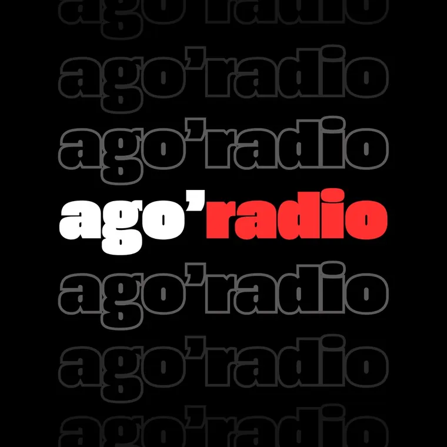

Agora Dau / Média étudiant indépendant
À vousla parole.
Analyses, entretiens, micros‑trottoirs et débats. Les étudiants prennent le micro.


Au studio d’Ago’radio
Le journal
Toutes les publications


À la une · La Gradiva · Avec l’ACD
La Gradiva
Longue est la liste des sujets abordés par le film La Gradiva qui met en lumière notre jeunesse actuelle.
Quand le modèle masculin s'effondre
Colonialisme vert
Ils ont volé la nuit

Ago’radio Épisode 1 · 46 min
Le tourisme de la pauvreté, au-delà des clichés
Avec Océlia Grandval
Un échange sur le tourisme de la pauvreté, l'image, l'argent et la dignité, loin des clichés.
La lecture n’a pas démarré. Tu peux utiliser le lecteur de la page d’écoute.

Qui tient
le micro ?
Agora Dau est un tout jeune média étudiant, indépendant. Notre but : rendre la parole aux étudiants, sans filtre ni langue de bois — à travers des podcasts, des micros-trottoirs, des débats et des analyses.
Rencontrer l’équipe La charte anti-IAAu programme
AudioPodcastsEn ligne
Conversations et débats de fond, en format long. On prend le temps d'aller au bout des sujets.
Retrouver Ago’radioTerrainMicros-trottoirsEn préparation
On tend le micro sur le campus et on récolte les vraies réponses des étudiants, brutes et sans filtre.
ConfrontationDébatsEn préparation
Plusieurs voix, plusieurs positions, zéro consensus tiède. On confronte les idées pour de vrai.
DécryptageAnalysesEn ligne
Des sujets de société décortiqués par des étudiants, avec un vrai regard critique.
Parcourir le journalUn sujet en tête ?
Une question qui mérite un micro-trottoir, une idée de débat ou de podcast ? Envoie-nous tout — les meilleures idées deviendront nos prochains contenus.
Les prochaines parutions
Inscris-toi à la newsletter pour recevoir les derniers articles.